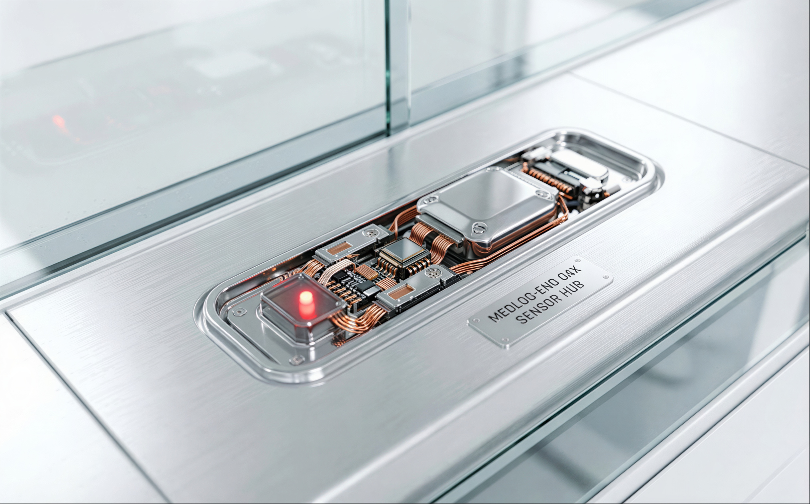
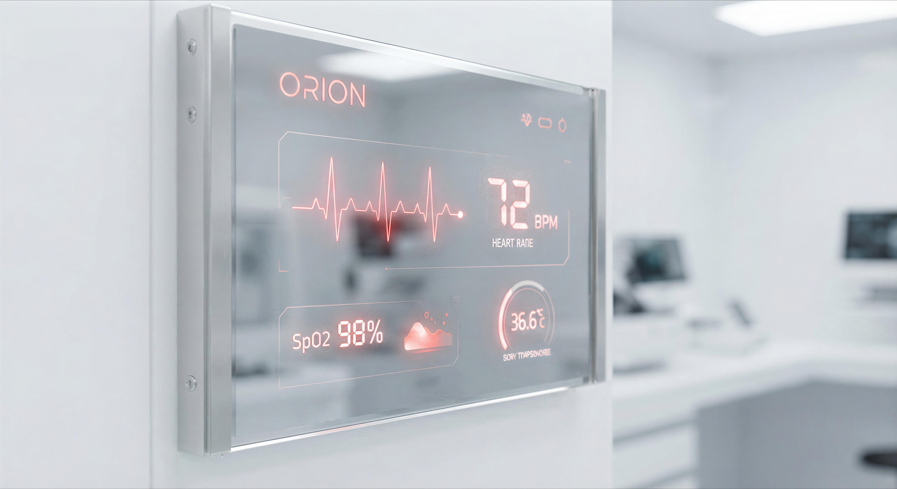
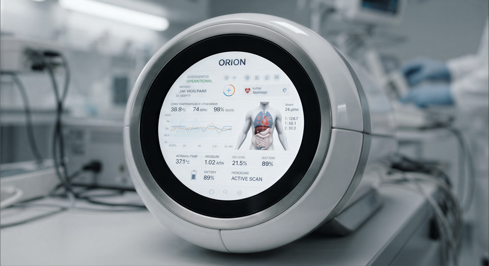
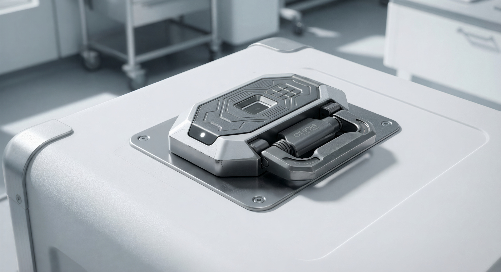
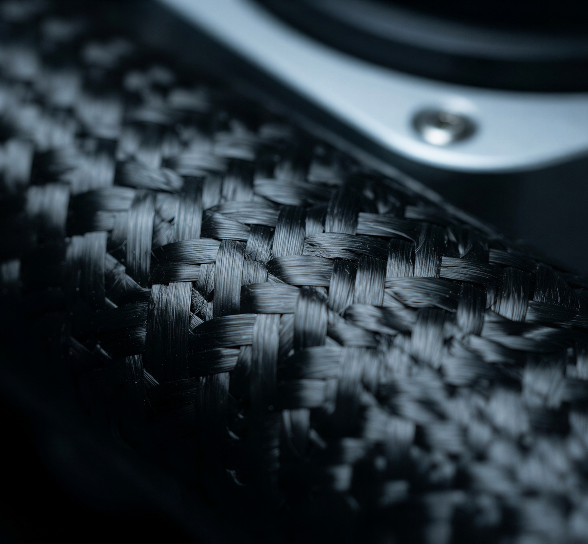
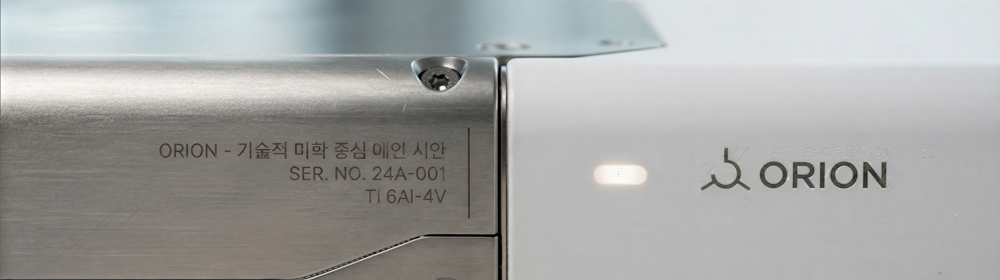

Technology
정밀함은
기술의 총합.
ORION의 신뢰는 하나의 기능이 아니라, 이륙부터 인계까지 이어지는 기술의 연속에서 나옵니다. 각 단계는 서로를 보완하도록 설계되었습니다.
01 AI Route
최단이 아니라,
최적의 길.
ORION의 경로 엔진은 거리만 계산하지 않습니다. 기류, 공역 제한, 배터리 잔량, 착륙 조건을 동시에 연산해 장기에 가장 안정적인 항로를 실시간으로 재설계합니다. 돌발 상황이 생기면 비행 중에도 경로는 다시 그려집니다.

MEDLOG-ENO · Sensor Hub02 Real-time Monitoring
보이지 않던 변화를
수치로 만듭니다.
캡슐 중심의 통합 센서 허브가 온도·습도·기압·충격·위치를 초 단위로 수집합니다. 하나의 값이라도 허용 범위를 벗어나면, 시스템은 즉시 보정하고 동시에 관제로 경보를 전송합니다.

Live Telemetry
데이터는
사라지지 않습니다.
운송 전 구간의 상태 로그는 그대로 기록되어, 도착 후 의료진이 장기의 이력을 완전하게 검증할 수 있습니다.
03 Control Interface
한 화면에서
모든 것을 읽다.
수술실과 관제실은 동일한 ORION 인터페이스로 연결됩니다. 장기의 상태, 캡슐의 환경, 드론의 위치가 하나의 원형 디스플레이 위에 통합되어, 누구든 지금 무슨 일이 일어나는지 즉시 이해할 수 있습니다.

ORION console · active scan
RFID handover module04 RFID / IoT Handover
인계의 순간에
오차를 두지 않습니다.
캡슐, 드론, 의료진은 비접촉 RFID 인증으로 서로를 확인합니다. 정당한 권한이 확인되기 전까지 잠금은 열리지 않으며, 모든 인계 기록은 위·변조 없이 남습니다. 사람의 실수가 개입할 여지를 구조적으로 제거했습니다.
05 Materials
가볍게, 그러나
타협 없이 견고하게.
항공 등급 카본 파이버와 Ti 6Al-4V 티타늄. 무게는 줄이고 강성은 높여, 비행 효율과 장기의 안전을 동시에 지킵니다.

Carbon-fibre weave Ti 6Al-4V precision joint
Ti 6Al-4V precision joint
